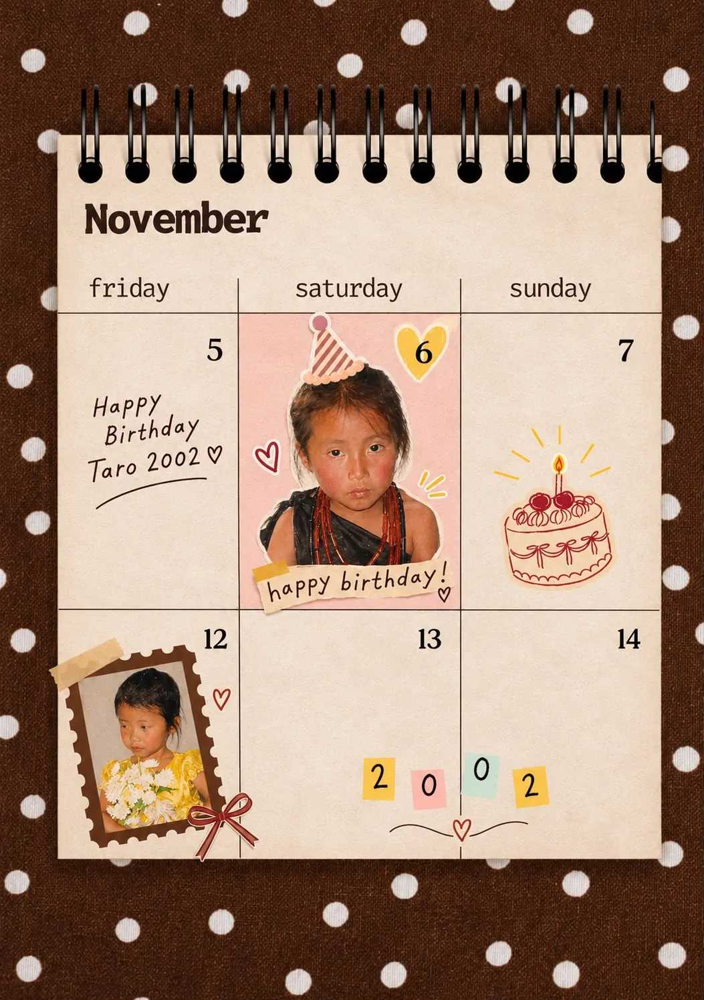
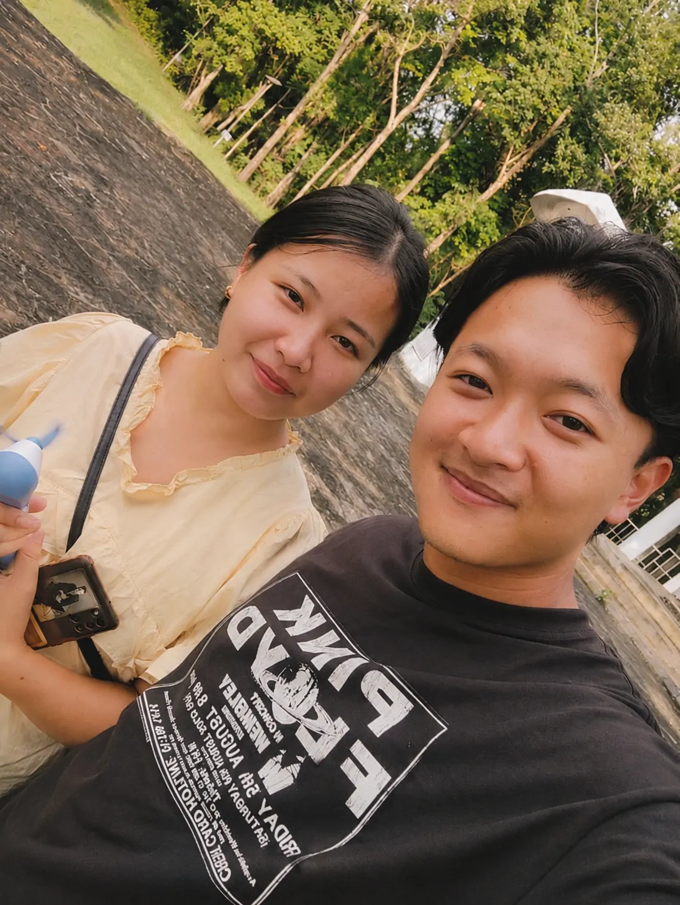
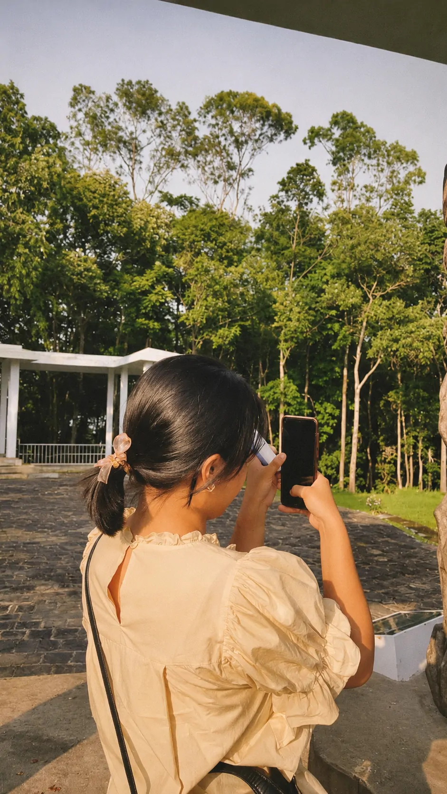
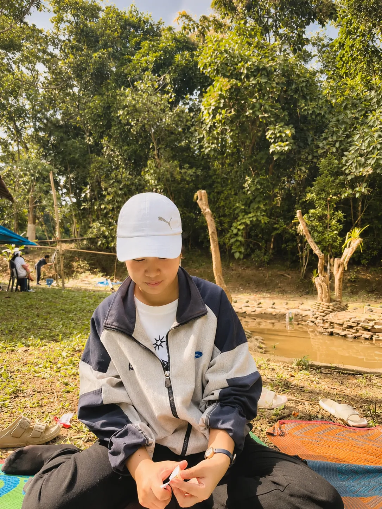
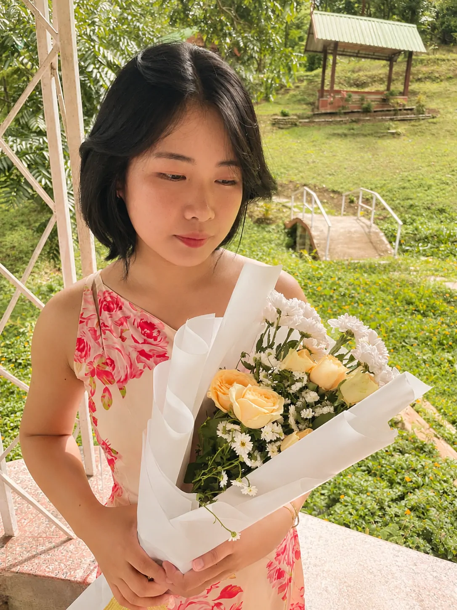
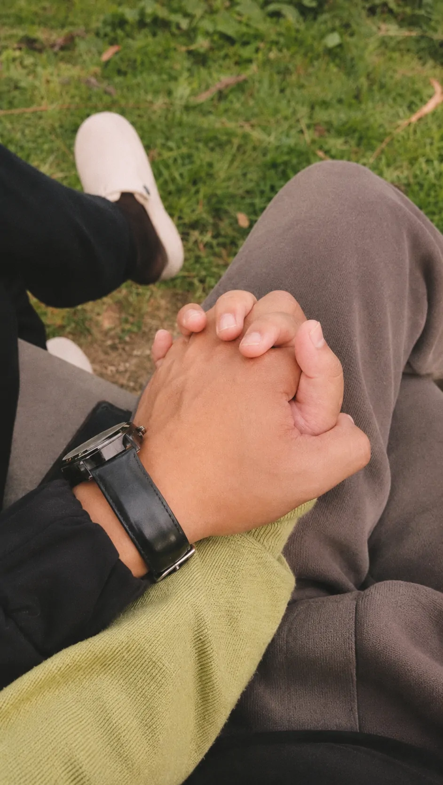
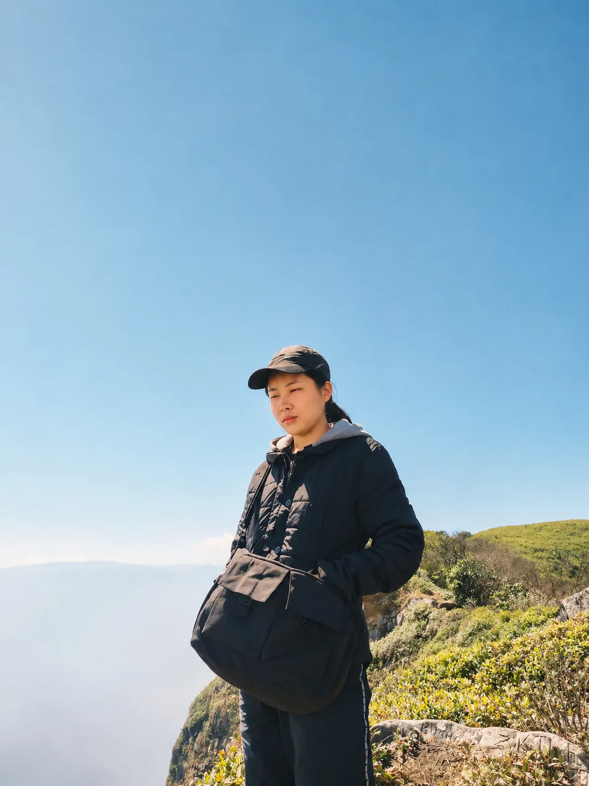
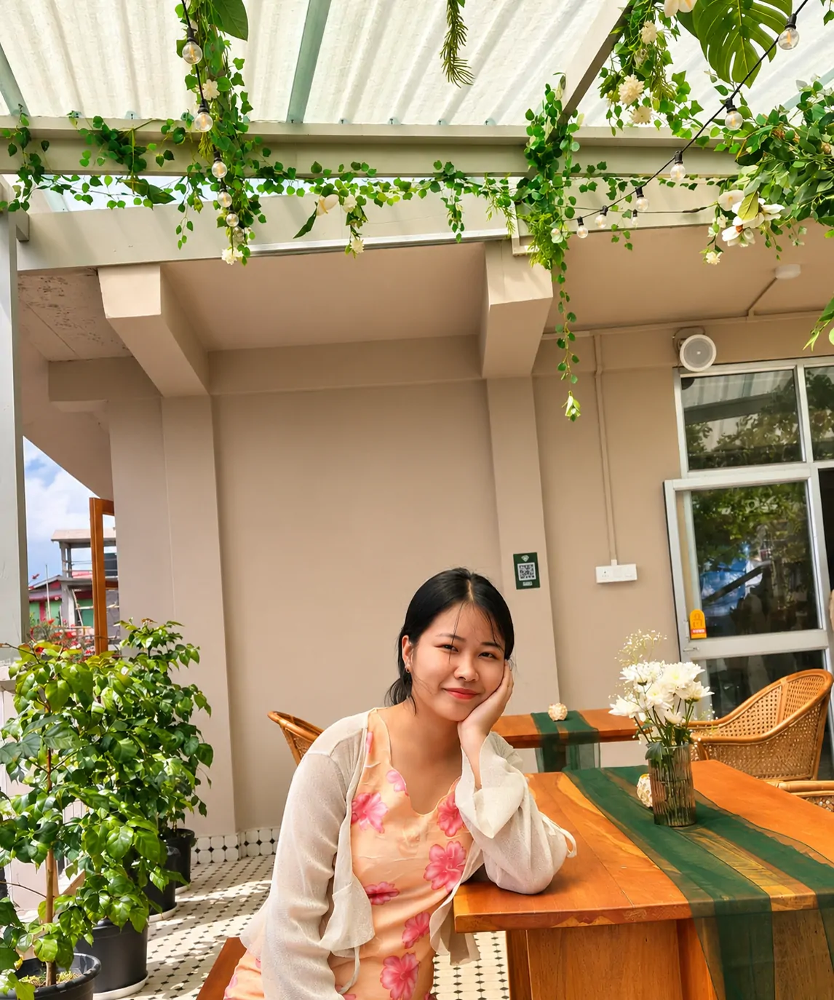
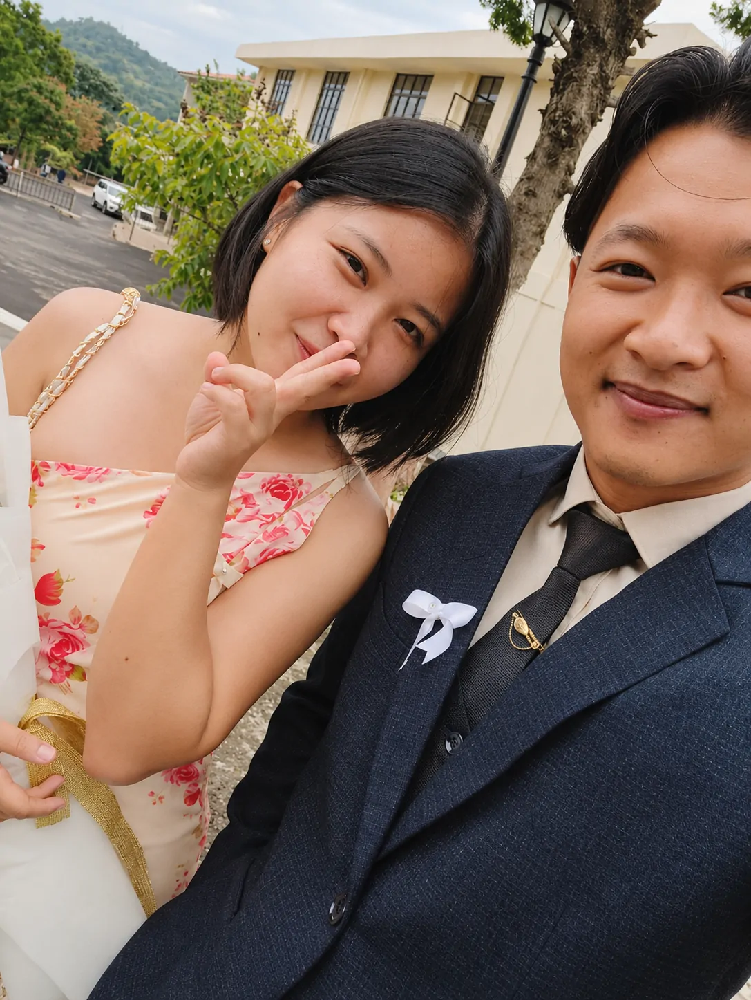
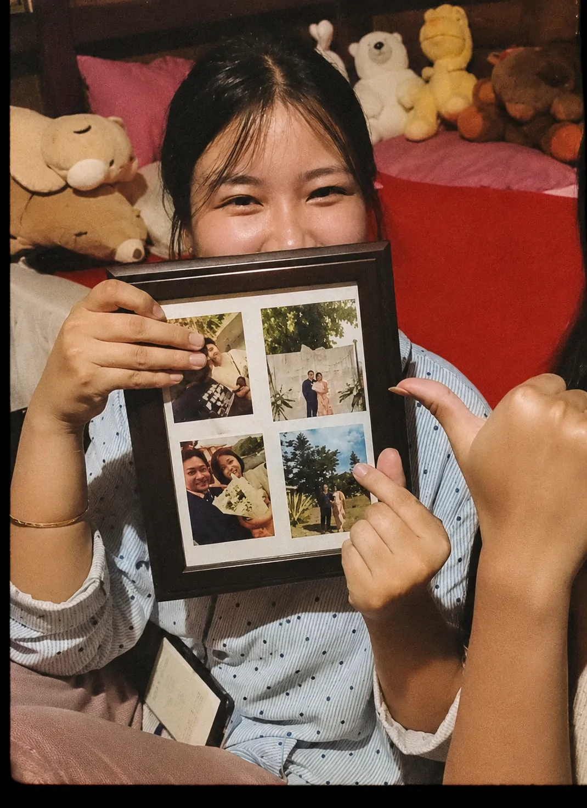

November 6 · the early chapters
Little Taro,
6 November · for Taro
before anything else…
Hold the button and let the candles go.
Keep holding until the circle completes.
Chapter one · guess his answer
Four questions. No pressure—he has already given away most of the answers.
classified vocabulary
Chapter two · a small archive
Not every important moment announces itself. Some of them simply stay.
Lumami Tower
“You have no idea how I was shivering.”









the campus walks
Hours in the park, her friends teasing from behind, and two people who were embarrassed and proud at exactly the same time.
A little of us
Press play. The background music will step aside.
Play one of Taro’s favourites ↗Chapter three · one thing left
Four digits. One day that belongs to both of you.
Enter the date.
the door is open
To my favourite person,
Happy Birthday, Taro.
Of all the unexpected and beautiful things life has brought my way, meeting you is one I’m especially grateful for. Sometimes I wonder how two people, living their own separate stories, find their way into each other’s lives. I suppose some connections really are a kind of cosmic entanglement.
I thank God for you, for your life, and for the privilege of knowing and loving you. My prayer is that this new chapter brings you closer to Him, strengthens your faith, and fills your heart with the kind of peace that only He can give.
I hope you never stop becoming the person God has created you to be. And I hope that, through every season of life, we continue to grow—not only in our love for each other, but also in our love for Him.
My love for you truly is ineffable. You are a blessing I never want to take for granted.
Now and always. ❤️